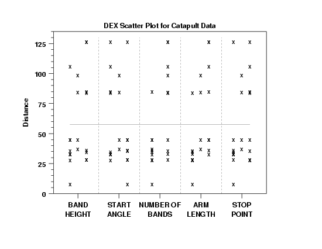
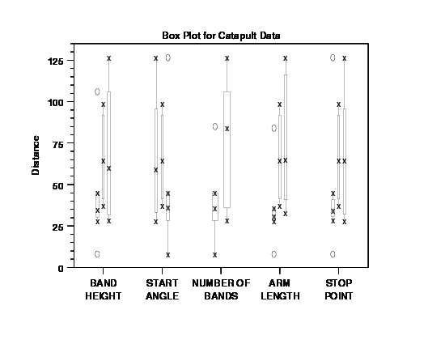
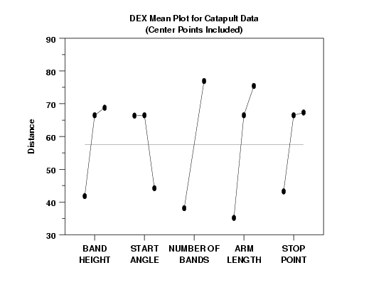
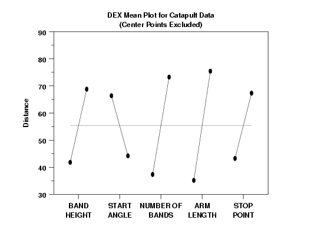
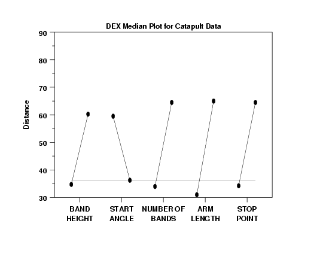
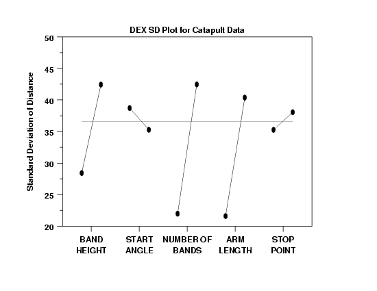

5.
Process Improvement
5.6.
Case Studies
5.6.3.
Catapult Case Study
|
|
Plot the Data: Dex Scatter Plot
|
The first step in the analysis is to plot the data using the
dex scatter plot.

|
|
Conclusions
|
We can make the following conclusions from the dex scatter plot.
- Wide Spread: The most noteworthy aspect of the DEX scatter
plot is the wide range of the response. The distance
ranges nearly 10 feet: from near-0 to beyond 125 inches.
Clearly, therefore, with such a range we have an
interesting system. Either we have a system in
which the factors and their settings have no
effect but is extremely noisy (unlikely), or we
have a system in which the factors and settings
have a deterministic effect which simply needs
to be uncovered (more likely).
- Bimodality: Also noteworthy is the bifurcation
of the data into 2 regions: below 50 inches and
above 80 inches, with a large 30+ inch gap in
the middle. Such bimodality is often caused by
the presence of discrete (non-continuous)
factors in the experiment, which would point an
initial finger at factor 1 (band height) and
factor 3 (number of bands) as the possible
culprits. In any event, the bimodality is
glaring and so a side-goal of the analysis is
to uncover the reason for its existence.
- Settings for Y = 60: The gap from roughly 50 to
80 is of particular concern because one of the
stated engineering goals is to determine
settings for the 5 factors that would yield a
response of 60 inches, and there is no setting
in any of the 20 runs that yielded a response
anywhere close to Y = 60. The implication is,
therefore, that the best setting must come from
a derived model and hence additional "pressure"
is being put on the model that it have good
interpolatory/extrapolatory properties.
- Weak Main Factors: Note from the scatter plot
that none of the 5 factors is (for one setting)
consistently below and then (for the other
setting) consistently above the gap. This
implies that there is no dominant factor and
hence the resulting model will be more
complicated and less parsimonious (that is will
need many terms).
|
|
Plot the Data: Box Plots
|
An alternative is to generate a
box plot, which
reduces all of the eight data points at a given factor and setting
into (in the simplest case) five summary statistics: the minimum,
the 25% point, the 50% point (the median), the 75% point, and the
maximum. Because of such simplicity, the box plot sometimes
manifests the differences in response locations (that is, the
factor effects) more clearly that the DEX scatter plot.

|
|
Conclusions
|
We can make the following conclusions from the box plot.
- Low Settings: Note how certain settings tend to
yield low responses. In particular, smaller
distances (<= 50 inches) tend to come from
(X1,X2,X3,X4,X5) = (-,+,-,-,-).
Further, these settings yield responses which
also have low variability. One can conclude,
therefore, the the best setting to yield Y = 30
(one of the experiment objectives) will
probably be in the vicinity of (-,+,-,-,-).
2. High Settings: Note that the opposite settings:
(X1,X2,X3,X4,X5) = (+,-,+,+,+)
yield responses which are high location and
high variability (that is, the distances are
much longer, but the responses are also much
noisier). This implies that the Y = 90
settings we develop will be much noisier (and
hence of much poorer quality) that the Y = 30
settings.
3. Variance-Stabilizing Transformations:
Furthermore, this combination of low location and
low variability with high location and high
variability is characteristic of a system which
violates the constant variability assumption
implicit in subsequent least-squares model
fitting, and hence provides the first
suggestion that a variance-stabilizing
transformation (e.g., logarithmic) should be
applied to the data prior to further analysis.
This transformation issue will be be revisited
later.
|
|
Check for Main Effects: Dex Mean Plot
|
One of the experimental goals is to identify the most important
factors. Specifically we would like to produce a ranked list
of such factors, ranked from the most important to the least
important. Such "factors" can include main effects, but can in
more generality include interactions. The
dex mean plot
(also known as the main effects plot) is an effective tool for
producing such a ranked list for main effects only (no
interactions).
Note that the dex scatter plot and the box plots used all the data
including center points. For the dex mean plot, we produce
two plots--one with the center points and one without. As is
common in the analysis of 2-level designs, we choose for subsequent
analyses to omit the center points and to use just the vertices of
the 2**(5-1). We hold the center points aside for analysis and
for modeling and we will use them at a later time for model
validation and confirmation.
In a dex mean plot, the vertical axis is the mean response at a
setting (typically this will be the mean of 8 values). One virtue
of orthogonal designs (such as the 2**(5-1) utilized here) is that
the least squares estimates of the factor effects is identically
the difference of the means for each setting. Hence, large
differences (steep slopes) that manifest themselves
in a dex mean plot implies large estimated factor effects.
The dex mean plot provides an easy "eyeball" method for arriving
at an initial ranked list of main factors.
|
|
DEX Mean Plot: Center Points Included
|

|
|
DEX Mean Plot: Center Points Excluded
|

|
|
Conclusions
|
We can make the following conclusions from the dex mean plots.
- Ranked List of Factors: From the dex mean plot with no
center points, we may deduce the ranked list of important
factors as
- X4 (arm length) (effect = about 40 inches)
- X3 (number of bands) (effect = about 35 inches)
- X1 (band height) (effect = about 30 inches)
- X5 (start point) (effect = about 25 inches)
- X2 (stop angle) (effect = about 20 inches)
- Lack of Dominant Factors: From the dex mean
plot, we note that the factor effects drop off
in a slow, near-uniform fashion. This is not
typical. It is much more common in engineering
experiments to have 1 or 2 factors dominate and
the remaining factor effects being 2 to 10
times smaller. That was not the case here.
There are 5 possible reasons for this
non-dominance:
- Engineering reality
- Interactions & Confounding
- Other Factors
- Noisiness (high variance)
- Non-constant variance
These 5 possibilities are now discussed point-by-point.
- Engineering Reality: The estimated effects
may in fact be accurate, and this may be a
factual reflection of the engineering
cause-and-effect. Again, this is not
usually seen in engineering experiments, but
is a possibility.
- Interactions and Confounding: Interactions may
be important and hence (in fractional
factorial designs) may contaminate main
effects. However, for the 2**(5-1)
fractional factorial design that we have
run, main effects are not confounded with
any 2-term or 3-term interactions (only
4-term interactions and higher). For many
physical systems, the assumption that 4-term
interactions and higher are nil (and may be
discarded) is invariably safe, and hence for
this experiment, contamination via
confounding is adjudged not to be the cause.
- Other factors: Other factors (besides the 5
we have controlled) may in fact be driving
the system. Unfortunately, these other
factors may be known or unknown, recorded or
not recorded. If there are other factors
driving the system, then this is a
near-fatal experimental deficiency, and their
effect will be smeared over (that is, will
bias) the main effects in an
unpredictable way. For this experiment,
this possibility must still be entertained.
In the larger issue, this is detected by the
replicated (pseudo-) center points during
the experiment, and the post-experiment
confirmation runs (replicated) at the best
settings (to yield Y = 30, 60, and 90). For
the replicated pseudo-center points, the
spread is reasonably close (see below) and
so there appears no drifiting caused by
other factors. Hence for this data, "other
factors" is probably not the cause.
- Noisy Experiment: Some experiments are
intrinsically noisy (for example, fracture and
reliability data). If the replication standard
deviation (the intrinsic variability the data have
under fixed conditions) is high, then that
may translate into large and non-discriminating
effect estimates. Fortunately, in our
experiment design, we designed in some
replication (the 2 pseudo-center points (each) at
X3 = -1 and X3 = +1) so as to estimate how much
intrinsic replication error the catapult experiment
has. For the 2 pseudo-center points at
(0,0,-1,0,0), the data is Y = 37.5 and 45, and
hence the replication standard deviation is
5.303. For the 2 pseudo-center points at
(0,0,1,0,0), the data is Y = 84.5 and 99 and so
the standard deviation is 9.175. Combining these
two estimates, we form a pooled standard deviation
of 8.162. Since 8.162 is less than 10% of the
total spread of the data (8 to 126.5), a "noisy
experiment" is probably not the cause of the large
effect estimates.
- Non-constant variance: This is the case where
the data is partially noisy. That is, it is
precise in certain subregions but noisy in other
subregions. In particular, for the case
where the response variable Y is in a
proportionately noisy (low response has
low random error but large response has
large random error), as opposed to absolutely
noisy (all the responses have the same random error),
then the settings of each factor which tend to
yield large responses (distances) will be
noisy, and hence tend to produce longer
distances, larger means, and hence larger
effect estimates. For this experiment,
non-constant variation is plausible and
the most likely explanation for the
non-discriminating effect estimates.
This discussion point will be picked up
at a later time.
- Settings to Maximize the Response: One of the
engineering objectives of this experiment was
to find the settings of the 5 factors that
would yield Y = 30, 60, and 90. If we
temporarily set aside this stated objective,
and replace it with the objective: "Find the
settings which maximize the response" (which is
common in many other engineering experiments),
then the dex mean plot assists in answering
that question. By noting for each factor as to
whether the maximum mean is attained by -1 or
+1, we may deduce from the plot that (on the
average) the maximal response is attained by
(X1,X2,X3,X4,X5) = (+1,-1,+1,+1,+1)
Scanning the raw data table, we
note that (+,-,+,+,+) happened by chance to not be one of
the design points (since this was a fractional factorial
design). However, the design point which yielded the
observed maximum response (Y = 126.5) was (+,-,+,+,-).
Note that these 2 sets of settings are identical for
factors X1 to X4 and differ only in factor X5. Based on
the dex mean plot, this suggests that (+,-,+,+,+) may in
fact yield a larger response than the observed
(+,-,+,+,-). This may be confirmed (or denied) by
follow-up confirmation runs at (+,-,+,+,+).
- Settings to Yield Y = 30, 60, 90: As for the
stated experimental objective of determining
best settings to yield Y = 30, 60, and 90, we
may deduce that the Y = 90 settings will be in
the "vicinity" of the maximum setting:
(+,-,+,+,+); the Y = 30 settings will be in the
"vicinity" of the converse: (-,+,-,-,-); and the Y =
60 settings are still unknown at this point.
|
|
Check for Main Effects: Dex Median Plot
|
The dex median plot is similar to the
dex mean plot.
Definitionally, each plot point in the dex median plot is the
median of all eight points at the given setting (-1 or +1) of
the given factor.
The dex median plot is not usually in the recommended list of
analysis techniques for 2-level orthogonal designs. We employ
it here because of the aforementioned noting of non-constant
variation and how that ties in with skewness. We are
specifically generating this plot so as to compare its
conclusions with the conclusions of the dex mean plot. However,
for formal effect estimation, we still
employ the usual least squares estimates which are the difference
of the means.

|
|
Conclusions
|
We can make the following conclusions from the dex median plot.
- Skewness and Transformations: The dex median
plot indicates that the data is skewed. Note
from the dex mean plot that the grand mean of
all 16 points is approximately 55, whereas
from the dex median plot the grand median is
drastically smaller: approximately 36. Further,
the location for the higher points has dropped
from around 70 (mean) to 60 (median), and the
location of the lower points has dropped from
around 40 (mean) to around 35 (median). All of
these are consistent with skewed data. Skewed
data is not fundamentally wrong to analyze. On
the other hand, the usual analysis tools and tests
are more valid with normal (or at least
symmetric) data and so this suggests a
transformation to normality (or at least
symmetry). Again, a logarithmic transformation
is commonly useful to achieve this goal.
- Ranked list of factors: Note that the ranked
list of factors from the dex mean plot was X4, X3,
X1, X5, and X2, whereas the ranked list of
factors from the dex median plot is X4, X3, X5,
X1, and X2. The consistency and robustness of
the X4 and X3 ranking across both plots
provides confidence in the importance of
these two factors relative to the remaining 3
factors.
- Best Settings for Maximum: Although this is not
a stated objective of the experiment, note that
the settings to yield the maximum on the median is
the same (+,-,+,+,+) as the settings to yield the
maximum from the dex mean plot.
|
|
Check for Main Effect Variability: Dex SD Plot
|
As with the dex median plot, the
dex standard
deviation plot is not usually generated (or needed). We
employ it here to illustrate how it may be usefully interpreted
in certain anomalous cases. Each plot point is the simple
standard deviation of all eight points at the given setting
(-1 or +1) of the given factor.

|
|
Conclusions
|
We can make the following conclusions from the dex standard
deviation plot.
- Ranked List of "Noisy" Factors:
Factors X3 (number of bands), X4 (arm length),
and X1 (band height) all significantly differ
in noisiness (by a factor of around 2 in the
standard deviation) between the -1 and +1
settings. The +1 settings are about twice as
noisy as the -1 setting for all 3 of these
factors. Factors X2 (start angle) and X5 (stop
angle) have nearly equal variation across their 2
settings.
- Non-Constant Variation: It is useful to interpret
the dex standard deviation plot in conjunction
with the dex mean plot. Note that the settings
of the 5 factors which minimize the variability
(from the dex standard deviation plot) is
(-,+,-,-,-). Note that this is identical to
the settings of the 5 factors which minimize
the mean (from the dex mean plot). Similarly,
large variability is from (+,-,+,+,+) which is
identical to large location (+,-,+,+,+).
Thus we have a reinforcement of what was seen
before, namely that the variation is increasing
with the location. This is referred to as
non-constant variation and its existence
negates the usual coefficient estimation output
from future least squares fitting.
|
|
Comparison of Plots
|
We have generated five separate plots to assess the main factor
effects. We recommend that at a minimum, both the dex scatter
plot and dex mean plot be generated for all fractional factorial
analyses. The box plot can substitute for the dex scatter plot
or be used to complement the dex scatter plot. The box plot
becomes easier to interpret than the dex scatter plot as the
number of factors, and thus the number of observations,
gets larger. In this case, the dex scatter plot and box plot
indicated high variabiliity, which was not constant across
factors, in the data. For that reason, we complemented the dex
mean and scatter plots with a dex median plot and a dex standard
deviation plot.
The dex scatter plot (or a box plot) and the dex mean plot are
useful first steps in viewing the data from a fractional factorial
experiment. The dex mean plot shows the main effects more clearly
than the dex scatter plot. However, the dex scatter plot can show
more detail, such as the prescence of outliers, that are hidden
in the dex mean plot.
|